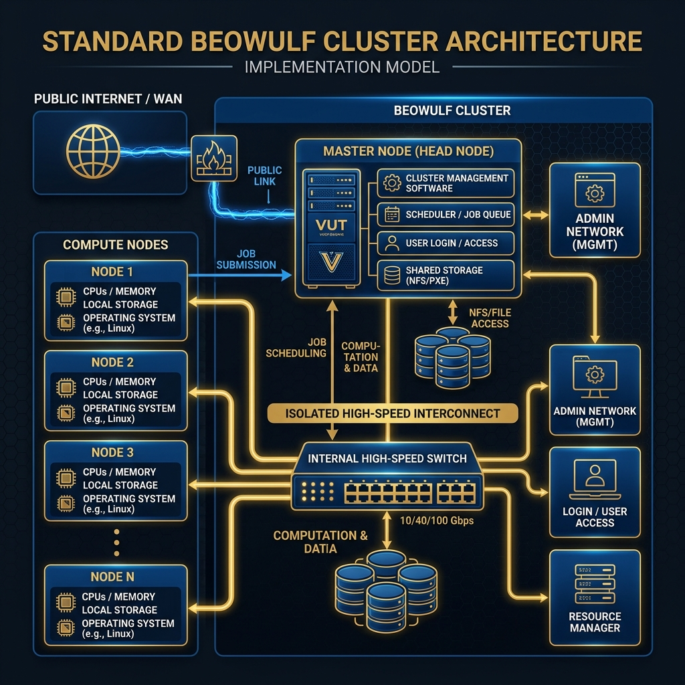
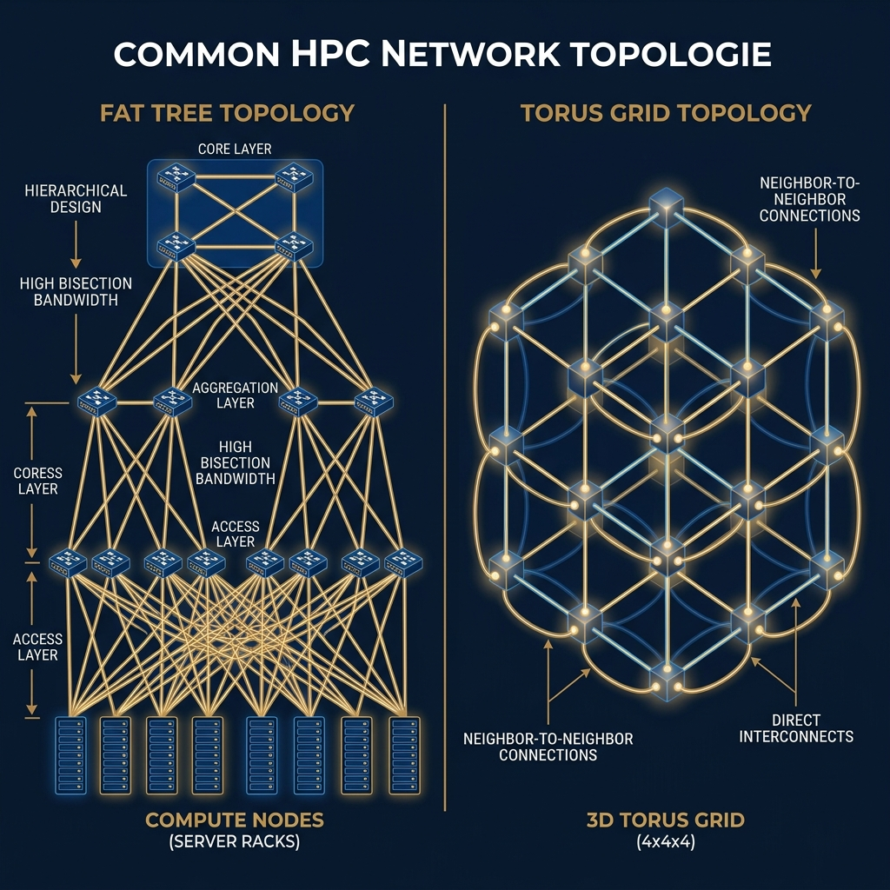
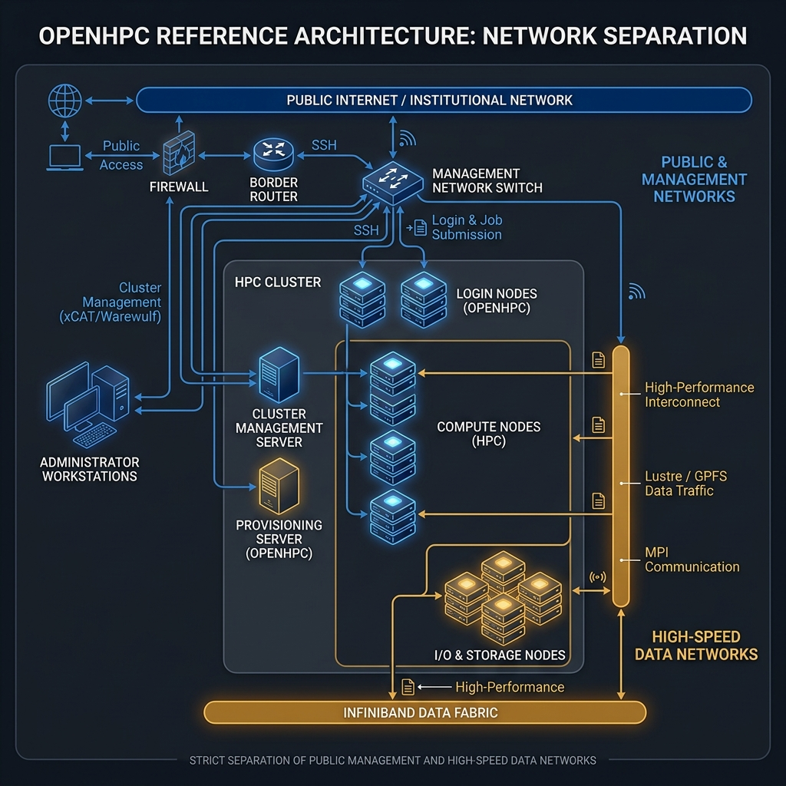

System Design and Networking
HPC & Cluster ComputingCourse: Operating Systems 4 (HPC)
Module: EIOSY4A
Topic: System Design and Networking
Reading Time: ~15 Minutes
By the end of this week, you should be able to:
1. Analyze the "Beowulf" approach to cluster design and its economic viability.
2. Evaluate and compare high-performance network topologies (Fat Tree vs. Torus) for specific computational workloads.
3. Critique the OpenHPC Reference Architecture for modern data center deployments.
4. Design the integration of core cluster services required for diskless operations.
In Week 1, we zoomed in on the microprocessor and saw the fundamental limits of a single node. This week, we're zooming out. We are moving from Micro-Architecture to Macro-Architecture. We're going to learn how to wire together standard, off-the-shelf servers to build a supercomputer. This is exactly the kind of architecture powering 90% of the Top500 list!
Assessment Alignment: The weekly quiz and practical assignments for this module specifically evaluate the Learning Outcomes listed below, verifying your ability to operate at an NQF Level 7 standard of analysis and synthesis.
1. Cluster Organization
1.1 The Beowulf Revolution
There was a time when supercomputers were exotic, multimillion-dollar beasts built from the ground up by companies like Cray or IBM. But in 1994, two researchers at NASA, Thomas Sterling and Donald Becker, flipped the script. They took 16 standard desktop PCs, connected them with basic Ethernet cables, installed Linux, and called it "Beowulf." They proved that you could get supercomputer-level performance simply by tying together cheap, mass-market parts. We call this the COTS (Commercial Off-The-Shelf) architecture, and it totally revolutionised the industry.
1.2 Anatomy of a Beowulf Cluster
So, how do we actually organize these computers? We use a specific, tiered layout that keeps administrative tasks from getting in the way of high-speed computation.

Figure 1: The Standard Beowulf Architecture. Notice how the public internet is strictly separated from the private, high-speed inner workings.
Every node has a job:
- Login Node (Head/Master): This is the front door. It's where you, the user, log in via SSH to write code and submit jobs. But you never run heavy calculations here!
- Compute Nodes: The workhorses. These servers sit in racks, often without monitors or even hard drives (diskless), just crunching numbers all day.
- Interconnect: The nervous system. This is a dedicated, ultra-fast network (like InfiniBand) that lets the compute nodes talk to each other without any outside interference.
- Storage Node: The giant shared hard drive. It makes sure that no matter which compute node your job lands on, it can see your files.
1.3 Symmetric Multi-Processing (SMP) and NUMA
While the cluster is a team of machines, each individual machine is usually an SMP (Symmetric Multi-Processing) system — meaning it has multiple CPUs sharing the same memory pool. But here's the catch: they don't share it equally. Because of NUMA (Non-Uniform Memory Access), CPU 1 can grab data from its local memory stick much faster than it can reach across the motherboard to CPU 2's memory stick. If you write code that ignores NUMA, you'll accidentally slow your programs down just by moving data the long way around.
2. Interconnect Topologies
Plugging five computers together is easy. Plugging 5,000 together without creating massive digital traffic jams requires some serious mathematical design. We call these designs "Topologies."
2.1 Latency vs Bandwidth
We measure our networks in two ways:
- Bandwidth is the width of the highway. How much data can we push through per second? (e.g., 200 Gbps). If you're moving huge files, you need high bandwidth.
- Latency is the speed limit. How long does it take for a single, tiny message to get from Node A to Node B? (e.g., 1 microsecond). If your nodes are constantly sending small "Are you done yet?" messages to each other, you need low latency.
2.2 Common Topologies
When architects design a cluster, they have to balance cost against performance.

Figure 2: Common HPC Topologies. On the left, the hierarchical Fat Tree. On the right, the neighbor-to-neighbor Torus grid.
- Fat Tree: This is the most common design. It looks like a tree where the "branches" (cables) get thicker (more bandwidth) as you get closer to the core switch. It ensures that any node can talk to any other node at full speed, but buying all those massive core switches gets incredibly expensive.
- Torus (3D/5D): Imagine connecting every server directly to its neighbors in a grid, wrapping around at the edges like a donut. There is no central switch, which saves money. It's brilliant for physics simulations where a point in space only needs to talk to the points right next to it.
2.3 The Communication Cost Model
If you want to estimate how long a message will take to send, you can use a simple formula called the Hockney Model:
$$ T = \alpha + \beta n $$
Here, $\alpha$ is the latency overhead just to get the message started, and $\beta$ is the time it takes to send each byte ($n$). The lesson here? Sending 1,000 tiny messages means paying the $\alpha$ "startup tax" 1,000 times. Good HPC programmers pack their data into one big message to pay that tax only once!
3. The HPC Software Stack (OpenHPC Implementation)
Hardware is useless without software. To turn a pile of servers into a cohesive supercomputer, we need a complex stack of services. Instead of reinventing the wheel, the global community created OpenHPC, a standard reference architecture that we use to build professional clusters.
3.1 The OpenHPC Reference Architecture
Let's look at how OpenHPC expects us to wire up and configure our services.

Figure 3: The OpenHPC Reference Architecture. Notice the strict separation of networks for security and performance.
3.1.1 The System Management Server (SMS)
In OpenHPC, the head node is called the SMS (System Management Server). Think of it as the brain of the operation. It handles user logins, distributes software, and manages the queue of jobs waiting to run.
3.1.2 Network Segmentation Strategy
OpenHPC is very strict about security and traffic management, splitting connections into three separate networks:
- Public Network (External): The front door. This connects the SMS to the university network or the internet. It's heavily firewalled.
- Private Network (Internal): The high-speed highway. This connects the SMS to the compute nodes. It is completely isolated from the internet. All the heavy data lifting happens here.
- BMC Network (Out-of-Band): The safety net. This is a dedicated, slow network connecting to a special chip on each server's motherboard. If a server completely crashes, we can use this network to remotely push the power button.
3.1.3 Critical Infrastructure Services
The SMS has to run a few absolutely vital services:
- DNS and DHCP: Every time a node boots, it needs an IP address and a name (like
node01). Without this, the nodes literally can't find each other. - Time Synchronization (NTP): If the clocks on two servers drift apart by even a few seconds, the job scheduler gets confused, logs become impossible to read, and parallel tasks crash. Time must be perfectly synced.
3.2 The Provisioning Layer, Middleware, and User Environment
Installing an OS on 1,000 computers by hand is a nightmare. Instead, we use a Provisioning Layer (like Warewulf). The SMS holds one "Golden Image" of the operating system. When the compute nodes turn on, they boot directly from the network, downloading the OS into their RAM. If a node breaks, we just reboot it, and it downloads a fresh, perfect copy.
To stop users from crashing the system by running too many programs at once, we use Middleware (Slurm). Slurm is the traffic cop that puts your jobs in a queue and only lets them run when there are enough free CPUs.
Finally, we manage software with Lmod (Environment Modules). Instead of installing every version of every compiler globally, we use Lmod so users can simply type module load gcc to get exactly the environment they need without breaking things for anyone else.
4. Summary and Next Steps
This week, we took the leap from theory to physical design. We learned that a cluster is a carefully engineered system of Login, Management, Compute, and Storage nodes. We looked at how high-speed topologies like Fat Trees keep data flowing, and we demystified the OpenHPC software stack that glues it all together.
Preparing for Week 3
Next week is where the fun begins. We're going to get our hands dirty with Node Provisioning. We will tackle the challenge of installing an operating system on dozens of computers simultaneously over the network using Warewulf.
- Can you draw the three major network zones in a cluster (Public, Private, BMC)?
- Do you understand why the Login Node is the only machine touching the internet?
- Why do we prefer "Stateless" diskless booting for our compute nodes?
- Why does OpenHPC insist on a separate "BMC Network" for management?
Resources
- CHPC. (2024). South African National Integrated Cyber Infrastructure System. Available at: https://www.nicis.ac.za (Accessed: 20 December 2025).
- OpenHPC. (2024). OpenHPC 4.1 Install Guide. Available at: https://openhpc.community/downloads/ (Accessed: 22 December 2025).
- Sterling, T., Anderson, M. and Brodowicz, M. (2018). High Performance Computing: Modern Systems and Practices. Morgan Kaufmann.
Test Your Knowledge
Ready to check your understanding of this week's material? Take the interactive quiz now!
Start Quiz